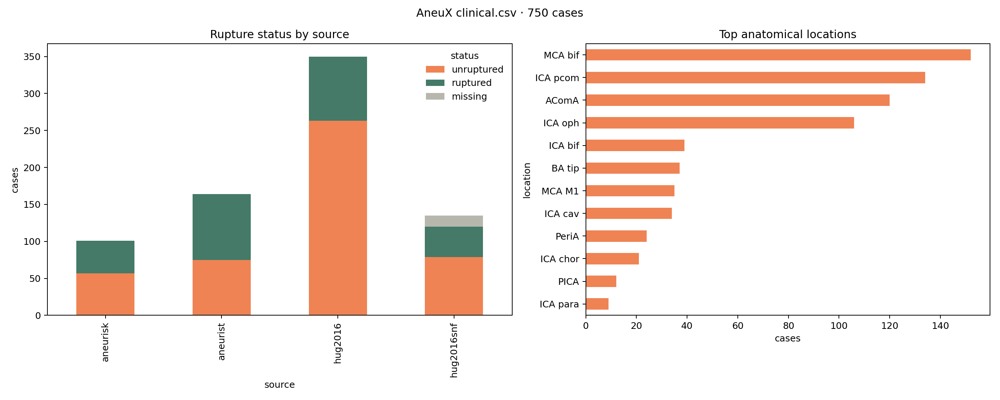
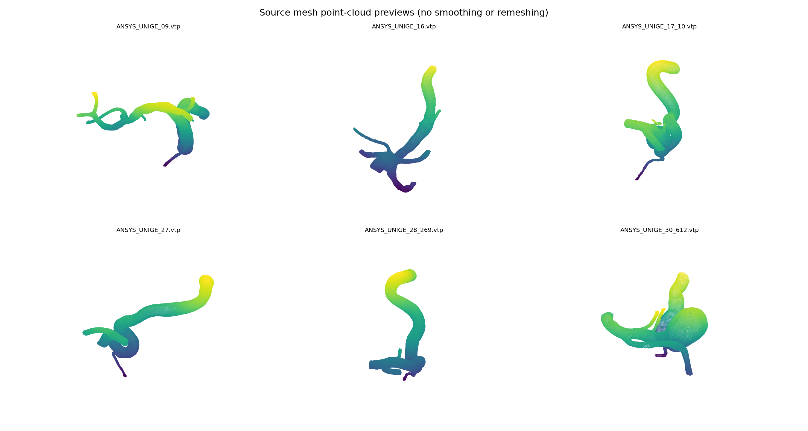

750개 동맥류 case의 surface mesh, morphology, clinical metadata를 provenance를 잃지 않고 연결하는 분석 노트.
PURPOSE & BOUNDARY
Large geometry coverage; no CTA or CFD field.
AneuX는 동맥류 및 parent vessel의 3D surface와 case-level 임상·형태학 정보를 제공한다. 즉 shape representation, morphology model, observed rupture-status association 분석에는 적합하지만, CTA segmentation과 node-level CFD surrogate의 ground truth는 제공하지 않는다.
01 / SOURCE ASSETS
Two archives, two roles
Acquisition audit
Metadata archive:data-v1.0.zip, 약 13 MB, 추출 완료 Model archive:models-v1.0.zip, 약 6.3 GB, integrity test/추출 진행 Clinical master: 750 rows Cut-level clinical: 3,422 rows
CSV row와 mesh 파일은 같은 디렉터리 구조가 아니다. 따라서 case-specific folder로 복사해 “통합”하지 않고 dataset과 vesselFileID를 보존한 manifest join으로 연결한다.
02 / CLINICAL DICTIONARY
Columns are variables, not all model features.
clinical.csv — direct inspection
source원 출처 cohort; source-aware split 후보datasetcase-level dataset identifierhospital배포자가 제공한 기관 표기statusruptured / unruptured / missinglocation동맥류 해부학적 위치 classsidelaterality 표기sex성별 표기age나이; 단위/결측 QA 필요patientIDpseudonymous patient identifiervesselFileIDvessel asset matching keycutToShow기본 cut reference
Label caveat:status는 이 dataset의 관찰된 rupture 상태다. 미래 rupture probability의 gold-standard가 아니며, clinical decision support 성능 주장에 직접 사용하지 않는다. 빈 status 15개는 negative label로 채우지 않는다.
Other source tables
clinical-per-cut.csv는 vessel/cut 단위의 추가 row를 갖기 때문에 clinical.csv와 행 수가 다르다. morpho-per-cut.csv / morpho-per-cut-flat.csv는 morphology feature를 cut 단위로 제공한다. 이들의 다단 header와 feature unit은 parser가 열 이름을 flatten하기 전에 원본 header를 보존해 검증해야 한다.
03 / CLINICAL EDA
Imbalance and source composition are part of the dataset.
아래 EDA는 추출된 data/clinical.csv을 직접 읽어 생성했다. 왼쪽은 source별 status count, 오른쪽은 가장 빈도가 높은 anatomical location이다. source와 label이 독립적이지 않을 수 있으므로 무작위 row split만으로 성능을 보고하지 않는다.

원본 clinical.csv 기반 EDA. source별 unruptured / ruptured / missing과 top 12 location. bar 색은 분석용 시각화일 뿐 clinical severity를 의미하지 않는다.
474unruptured
261ruptured
15missing status
152MCA bif (largest location)
Observed EDA findings
1. Label-complete 분석 cohort는 735개이며 class ratio는 unruptured 64.5%, ruptured 35.5%이다. 2. source별 label 구성은 다르다: hug2016은 263/87, aneurist는 75/89, aneurisk는 57/44 (unruptured/ruptured)였다. 3. MCA bif, ICA pcom, AComA, ICA oph가 가장 빈도가 높다. 따라서 location leakage와 distribution shift를 확인하지 않으면 shape model이 cohort/location shortcut을 학습할 수 있다.
04 / REPRODUCIBLE PIPELINE
Keep source tables intact; make versioned derivatives.
dataset ID, vesselFileID, cut reference, raw relative path, checksum을 한 행에 기록한다. 다른 dataset의 ID와는 join하지 않는다.
Geometry QA
각 mesh의 vertex/face count, watertightness, connected components, bounding box, unit 후보를 계산한다.
Feature policy
morphology feature는 source column·unit·missingness를 남긴 뒤 모델용 numeric matrix로 변환한다. label과 같은 의미의 proxy feature는 leakage audit한다.
Split policy
patientID가 있으면 patient-disjoint, 가능하면 source/hospital-disjoint holdout을 우선한다. case row 단위 random split은 baseline으로만 쓴다.
+
05 / RAW MESH PREVIEW
Original surface assets, before graph conversion
이 preview는 models/vessels/original 아래에서 실제 VTP 원본 6개를 선택해 point cloud로 렌더링한 것이다. smoothing, registration, remeshing을 적용하지 않았으며 표본별 point 수는 14,284–22,380이다. 현재는 vessel asset 표본이고, archive extraction이 완료되면 aneurysm dome/cut asset을 추가해 pair coverage와 topology QA를 분리 보고한다.

원본 VTP surface point preview: ANSYS_UNIGE_09, 16, 17_10, 27, 28_269, 30_612. 각 축은 sample별 자동 범위이며 서로 다른 scan/mesh의 절대 scale 비교용이 아니다.
# source asset preview (no geometry mutation)
python scripts/render_mesh_samples.py \
extracted/aneux/v1/models derivatives/aneux/mesh_samples
# writes mesh_samples.png + mesh_samples.csv
# first six source VTP/STL assets, point count recorded for audit